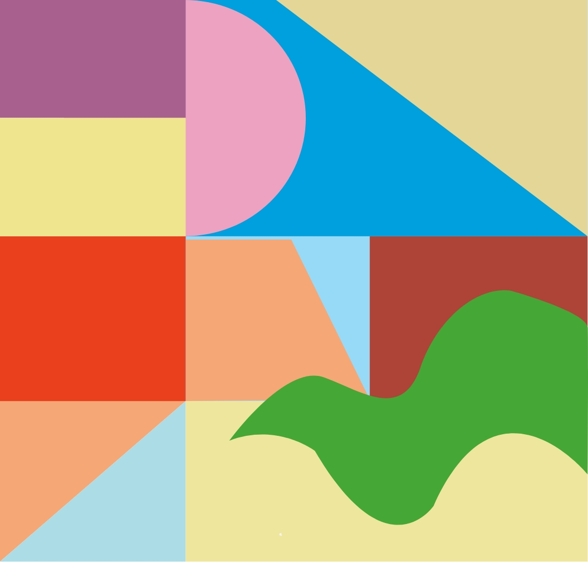

Alessandro Mendini
INTRODUCE
DESIGN
ARCHITECTURE
INTERVIEW

DESIGN
‘지성인의 벗’을 표방하는 ‘아물레또’를 내세운 조명 브랜드
디자이너로서 2010년에 디자인한 라문 아물레또 스탠드 조명 디자인의 역사적인 가치는 LED의 장점을 최
대한 잘 살린 링모양으로 조명의 균일도를 높였으며 투명 소재를 사용하여 램프의 기계적 메커니즘을 돋보
이게 한부분과 스프링과 전선이 없이 원과 직선으로만만들어진 미니멀한 구조안에 다양한 색깔을 믹스매치
해 인간적 감성을 불어넣었다는 것이다. 그 뛰어난 기능성과 작품성으로 현재 독일 뮌헨 현대 미술관(모던 피
나코텍)과 미국 시카고 아테나에움 건축 디자인 뮤지엄, 네덜란드 그로닝거뮤지엄, 덴마크 뮤지엄, 중국 칭
화대 아트뮤지엄에 영구소장품으로 전시되고 있다.
Alessi Anna G. CORKSCREW
Alessandro mendini가 발레리나 여자친구가
기지개하는 모습에서 영감을 받아
탄생한 사랑스러운 여인 안나G.입니다.
전세계적으로 알레시에서 사랑받는 상품 중 하나로
우아하게 오르내리는 팔이 매력적인 제품입니다.
Proust Chair
소설가 마르셀 프루스트(Marcel Proust)의 작품
에서 영감을 받아 프루스트 체어라는 이름이붙어
진 이 의자는 다양한 색상과 패브릭 마감 외에도 도
자기, 청동으로도 제작되었으며, 마지스에서는 플
라스틱의 일종인 폴리에틸렌(polyethylene) 소재
로 제작되어 판매되고 있다.